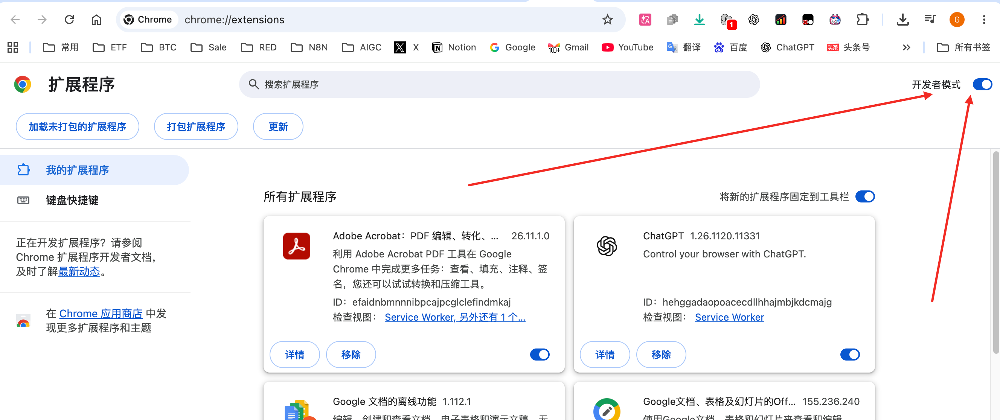

把操作变顺手。
从准备投稿，到关联作品。
标签预设，直接试试。
按回车保存，点执行填入。
还可以添加 7 个标签


选好浏览器，
装上喵贴。
选择你的浏览器
点击浏览器，查看对应的商店与安装方式。
从 Chrome 商店安装
- 点击商店入口，进入喵贴详情页。
- 选择「添加至 Chrome」，确认安装。
- 固定喵贴图标，刷新 B 站页面。
关于 Chromium 与离线安装
Arc、Dia、Comet、QQ、夸克、2345、百分、UC 和搜狗等 Chromium 衍生浏览器，与 Chrome 共用扩展版本。可以前往 Chrome 商店直接安装；无法访问商店时，下载离线 CRX，按下方步骤安装。

1下载 CRX 文件
下载后，点击浏览器右上角的下载图标，再点击文件夹图标，找到 .crx 文件，无需解压。

2打开扩展程序页面
复制下方地址，粘贴到浏览器地址栏，按回车打开。
chrome://extensions

3开启开发者模式并拖入
打开右上角的「开发者模式」，将下载好的 .crx 文件拖入此页面，按提示确认。完成后刷新 B 站。
若浏览器阻止安装本地 CRX，请优先使用商店；也可用解压工具提取 CRX 内容，再通过「加载未打包的扩展程序」选择含 manifest.json 的文件夹。
商店版本以详情页为准。
开始前，再确认一下。
喵贴会自动替我投稿吗？
不会。喵贴辅助填写与操作，标签组按需独立执行，最后仍由你核对并手动投稿。
Chrome 商店打不开怎么办？
在上方选择 Chrome，下载官网离线 CRX，按下方图解安装。离线版需要手动更新。
其他 Chromium 浏览器怎么安装？
Arc、Dia、Comet、QQ、夸克、2345、百分、UC、搜狗等 Chromium 衍生浏览器可直接从 Chrome 商店安装；无法访问时，下载离线 CRX，按图解安装。